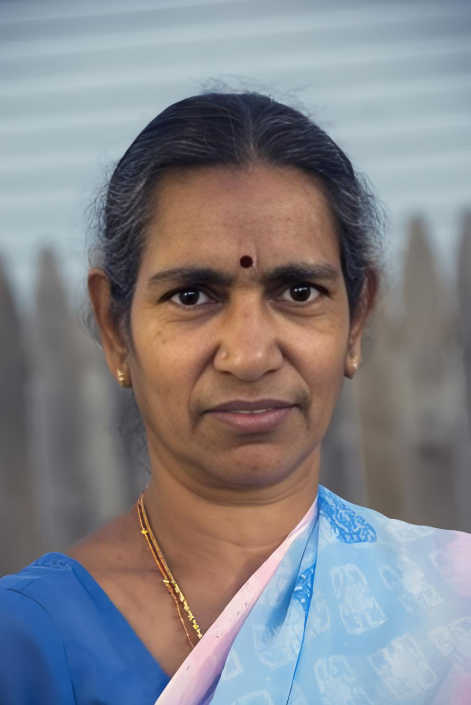

Meet Bhavani
Age: 68
ID:SRMEOO7
Condition: End-Stage Renal Disease (requiring kidney transplant)
About Bhavani: Bhavaniyama, a vibrant and determined individual, has been facing a daunting health challenge. Her kidneys are failing, and she urgently needs a transplant to survive. Despite the obstacles, Bhavaniyama remains hopeful and brave. Your support will help us provide her with the critical medical care and love she needs to overcome this difficult journey.
Amount Required :₹ 7,00,000
Amount Gathered : ₹ 4,20,000
How You Can Help
- Donate: Your financial support can help us provide Bhavani with the medical care she needs.
- Volunteer: Spend time with Bhavani and help us with daily tasks.
- Spread the Word: Share Bhavani's story with your friends and family to help us raise awareness.